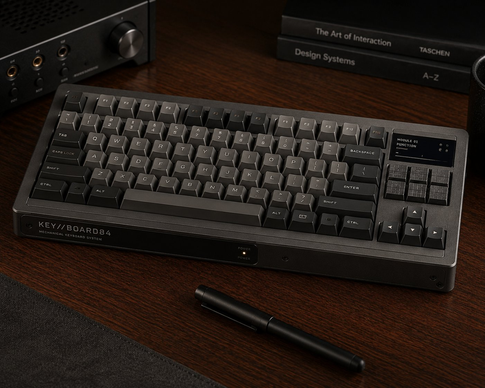
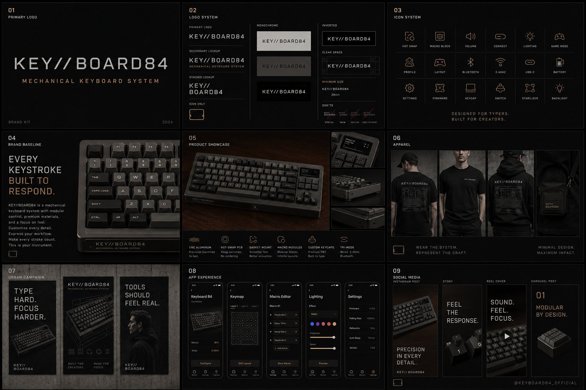

A mechanical keyboard inspired by 80s terminal boards — exaggerated tactile feedback, weighty case, swappable function blocks at the top. Built for people who type for a living and want to feel it.
Sit down. The case is heavy. The keys click hard. Each one a deliberate, audible commitment.
Pull a macro module off, replace it with another. Hot-swap your function block per session.
QMK firmware locks layouts to the board. Take it anywhere — your keymap goes with you.
Heavy detent, audible click, satisfying bottom-out. Designed for people who already know.
Switch the switches without a soldering iron. MX, Choc, Alps — board takes them all.
Modular function blocks at the top of the board. Volume strip, knob, macro pad — your call.
CNC aluminium case, brass plate, gasket-mount. Built like the boards collectors put behind glass.
Open-source firmware. Layers, macros, tap-dance, leader keys — write the board you want.
Coder layout, video-editor layout, writer layout. Same hardware, swappable layers.

The mechanical-keyboard community is large, organised, and willing to spend. Key//Board 84 launches with a base configuration plus enthusiast tiers — switches, keycaps, macro blocks unlocked at higher pledge levels.